SaaSの基幹システムを
モジュラーモノリスとして再設計
Dennis Metzger
スケールするサービスにおける
アーキテクチャの工夫・苦労を語る会
アーキテクチャの工夫・苦労を語る会
Dennis Metzger
Backend Engineer @ Finatext



- rows := []string{}
- err := tx.Select("underwritten_at").
- From("policies as p").
- Where("p.id = ?", id).
- LoadContext(ctx, &rows)
- rows := []model.Policies{}
- err := jet.
- SELECT(table.Policies.UnderwrittenAt).
- FROM(table.Policies).
- WHERE(table.Policies.ID.EQ(jet.String(id))).
- QueryContext(ctx, tx, &rows)
- rows := []string{}
- err := tx.Select("underwritten_at").
- From("policies as p").
- Where("p.id = ?", id).
- LoadContext(ctx, &rows)
- rows := []model.Policies{}
- err := jet.
- SELECT(table.Policies.UnderwrittenAt).
- FROM(table.Policies).
- WHERE(table.Policies.ID.EQ(jet.String(id))).
- QueryContext(ctx, tx, &rows)
- ./CLAUDE.md
より詳細な実装ガイドは docs/ ディレクトリに整理されています。以下のトピックを参照してください：
- ./docs/modular-monolith.md
- ./docs/api-development.md
- ./docs/database-migrations.md
- ./docs/dependency-injection.md
- ./docs/security.md
- ./docs/troubleshooting.md
ご清聴ありがとうございました！
Dennis Metzger
スケールするサービスにおける
アーキテクチャの工夫・苦労を語る会
アーキテクチャの工夫・苦労を語る会